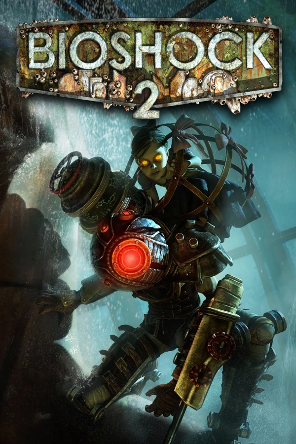

BioShock 2
BioShock 2
Detalhes
|  | |
| Tempo de jogo | Não Jogado |
| Última Atividade | Nunca |
| Adicionado | 09/03/2025 22:47:31 |
| Modificado | 10/03/2025 1:12:04 |
| Status de Conclusão | Not Played |
| Biblioteca | Gog |
| Fonte | GOG |
| Plataforma | PC (Windows) |
| Data de Lançamento | 09/02/2010 |
| Pontuação da Comunidade | 81 |
| Avaliação da crítica | 88 |
| Pontuação do Usuário | |
| Gênero | First-person shooter |
| Desenvolvedor | 2K Marin |
| Editor | 2K Games |
| Funções | Multiplayer Single Player |
| Links | Wikipedia |
| Tag | [EMT] Video Micro missing [EMT] Video missing |
Descrição
BioShock 2 is a first-person shooter video game developed by 2K Marin and published by 2K Games. It was released worldwide for PlayStation 3, Windows, and Xbox 360 on February 9, 2010; Feral Interactive released an OS X version on March 30, 2012. The game takes place in the dystopian underwater city of Rapture, eight years after the events of BioShock. In the single-player campaign, players control the armored protagonist Subject Delta as he fights through Splicers—the psychotic human population of the city—using weapons and an array of genetic modifications. The game includes a story-driven multiplayer mode that takes place before the events of BioShock, during Rapture's civil war.
After the success of BioShock, 2K Games formed a new studio, 2K Marin, to create the sequel. 2K Australia, Arkane Studios, and Digital Extremes provided additional support. The developers focused on improving gameplay elements from the first game, and return to the Rapture setting to explore a new perspective of the city. The story received major changes throughout development. Garry Schyman, who composed BioShock's soundtrack, returned for the sequel; he expanded the game's sonic palette to include more blues and religious music to parallel its themes.
BioShock 2 received positive reviews, with praise directed at its narrative, themes, art style, characters, endings and gameplay. Criticisms included a slow start and failure to distinguish itself from its predecessor. Retrospective reviews have been more positive, with some considering it the best in the series. The multiplayer mode was supported with downloadable content, and a single-player campaign expansion, Minerva's Den, released in August 2010. The game sold more than 3 million copies, but did not meet the publisher's sales expectations. A remastered version titled BioShock 2 Remastered was released as part of BioShock: The Collection for PlayStation 4, Windows, Xbox One, and Nintendo Switch.